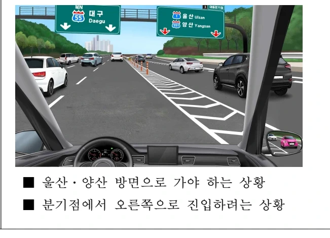

819. Bạn phải đi về bên phải nhưng vào nhầm đường. Hai cách lái xe nào là an toàn nhất trong lúc này?

- ①Tiến vào khu vực an toàn, bật đèn nhấp nháy khẩn cấp sau đó tiến vào bên phải.
- ②Bật đèn xi nhan bên phải, tiến vào khu vực an toàn rồi tiến vào bên phải.
- ③Tăng tốc nhanh và tiến vào bên phải.
- ④Cứ thế đi về phía Daegu.
- ⑤Tận dụng nút giao thông và điểm phân chia đường sắp tới.
Xem đáp án
Đáp án
④ Cứ thế đi về phía Daegu.
⑤ Tận dụng nút giao thông và điểm phân chia đường sắp tới.
Căn cứ
Một số người lái xe, để quyết định đi vào lối nào ngay trước nút giao thông hoặc ngã ba, hãy giảm tốc độ đột ngột hoặc đợi trong khu vực an toàn nơi cấm đi vào rồi cưỡng bức đi vào. Ngoài ra, nếu vượt qua đường vào, họ có thể dừng lại ở khu vực an toàn hoặc trên lề đường rồi lùi lại. Loại hành vi này có thể gây ra hành vi khó lường của người lái xe khác và trực tiếp gây ra tai nạn, vì vậy bạn nên từ bỏ việc đi vào và sử dụng nút giao, ngã tư tiếp theo để đảm bảo an toàn. Cách lái xe an toàn nhất là có thái độ tìm hiểu trước lộ trình từ nơi khởi hành đến nơi đến.
Phần căn cứ là bản dịch máy để tham khảo.